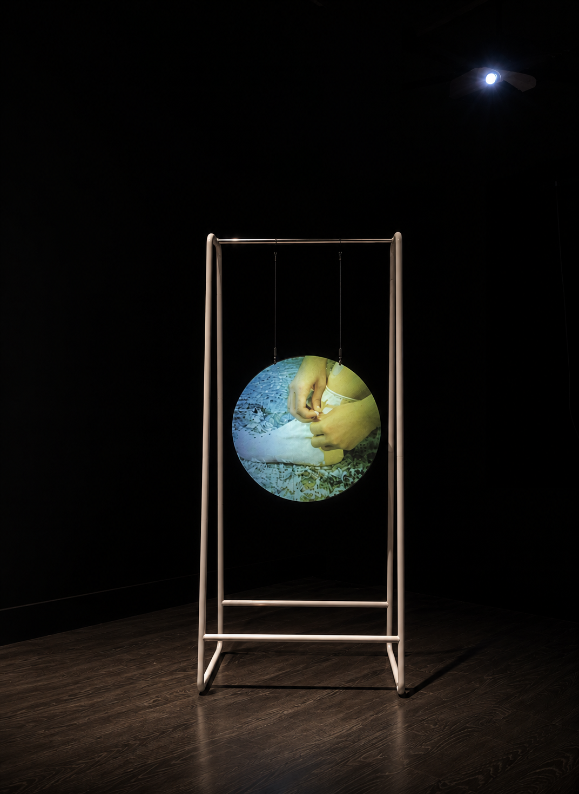

CREATIVE WAVE 001
SOOVIN
CHOI
Digital Media Designer & Creative Marketer
Creating visual experiences through photography,
design, technology, and storytelling.
ANALOG PROCESS · DIGITAL DESIGN · WEB · AI
CREATIVE WAVE 001
Digital Media Designer & Creative Marketer
Creating visual experiences through photography,
design, technology, and storytelling.
ANALOG PROCESS · DIGITAL DESIGN · WEB · AI
SELECTED WORK
Building a company's first digital presence through web design, development, and brand storytelling.
Digital marketing, content creation, visual strategy, and social storytelling.
Exploring emerging tools through creative direction and image generation.
VISUAL ARCHIVE



ABOUT
My creative foundation began with analog photography,
exploring 35mm film, medium format, darkroom printing,
and alternative photographic processes.
Through visual storytelling, I learned to understand
images through light, composition, process, and narrative.
Today, I combine those fundamentals with digital marketing,
web design, Adobe Creative Suite, and AI-assisted creative workflows
to build meaningful digital experiences.